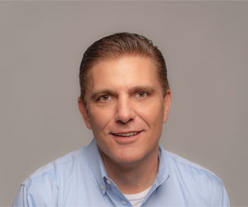

Olathe, KS
(714) 394.8022
steveh@maschmedt.com
Steve has spent over 35 years in the outdoor industry, building a career defined by leadership, long term partnerships, and consistent results. He began at just 16 as a prostaff member for a regional rep agency, later joining the team full time at 22. After serving as a buyer for Turner’s Outdoorsman, he joined Maschmedt & Associates in 1997, where his performance earned numerous sales awards and steady advancement. He was promoted to Vice President in 2007, became an equity partner in 2011, and ultimately purchased the agency in 2022.
Key Accounts: Bass Pro Shops, Davidsons, West Marine